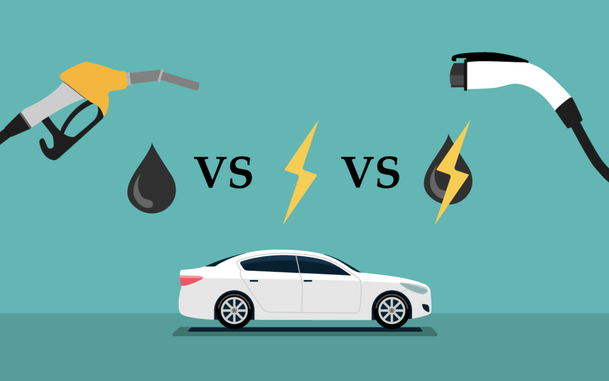

Tényleg környezet kímélőbbek az elektromos járművek?

A veboldal készítésekor megpróbáltam pártatlan maradni amennyire csak tudtam, mert én magam is rajongok az autók iránt.
Szeretem a benzines és az elektromos autókat is.
Egyik oldalért se harcolok, csak tudni akarom az igaz tényeket a témával kapcsolatban.